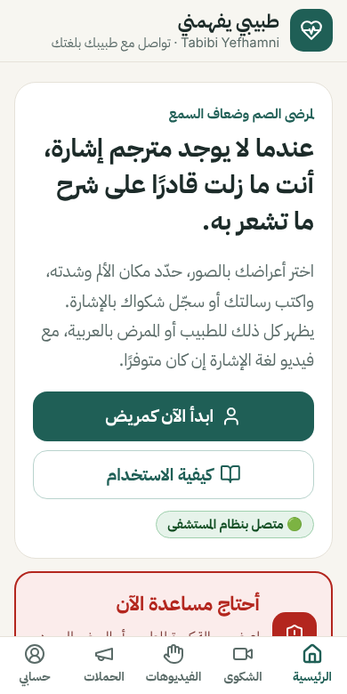
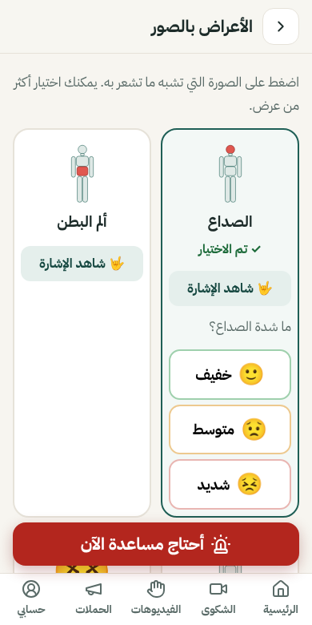
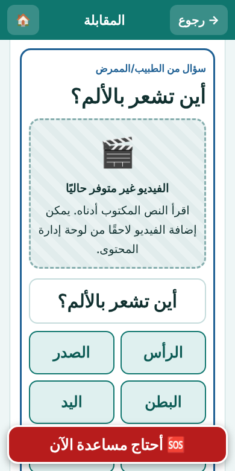
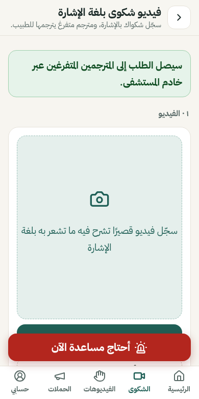

طبيبي يفهمني
تطبيق يساعد المرضى الصم وضعاف السمع في مصر على التواصل مع الأطباء والممرضين، عندما لا يوجد مترجم لغة إشارة.

لماذا هذا التطبيق؟
في العيادة أو الطوارئ قد لا يجد المريض الأصم من يترجم له. الأسئلة تُطرح بالكلام، والإجابات تضيع. «طبيبي يفهمني» يجعل الحوار مكتوبًا ومرئيًا وواضحًا للطرفين.
الأعراض بالصور
المريض يضغط على صورة العرض ويحدد شدته دون الحاجة للكتابة.
مكان الألم
صورة للجسم يحدد عليها المريض مكان الألم وشدته.
أسئلة جاهزة للطبيب
الطبيب يختار سؤالًا فيظهر على هاتف المريض مكتوبًا مع فيديو الإشارة إن توفر.
أحتاج مساعدة الآن
زر كبير يعرض رسالة واضحة، ويرسل تنبيهًا مرئيًا لهاتف الطبيب.
فيديو شكوى بالإشارة
المريض يسجّل شكواه بلغة الإشارة، ومترجم متفرغ يترجمها بالعربية ليقرأها الطبيب.
موعد مع مترجم
طلب مترجم إشارة يرافق المريض في موعد العيادة.
الحملات
حملات التطعيم والتوعية الموجّهة للصم، مع فيديو إشارة عند توفره.
يعمل دون إنترنت
ربط مباشر بين هاتف المريض وهاتف الطبيب بمسح رمز QR، على نفس الواي فاي أو نقطة اتصال.
من الشاشات



بصراحة: ما الموجود وما الناقص
الأعراض، مكان الألم، الأسئلة، المحادثة بين هاتفين (ربط مباشر دون إنترنت أو عبر خادم المستشفى)، طلب المساعدة، فيديو الشكوى وبوابة المترجمين، طلب موعد مع مترجم، الحملات، ولوحة إدارة المحتوى.
فيديوهات لغة الإشارة المصرية الحقيقية لم تُصوَّر بعد. كل الشاشات تعرض «الفيديو غير متوفر حاليًا» مع النص المكتوب.
هل أنت مترجم لغة إشارة مصرية أو جمعية للصم؟ ساعدنا في تصوير الفيديوهات.